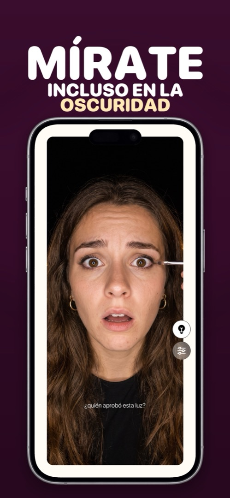
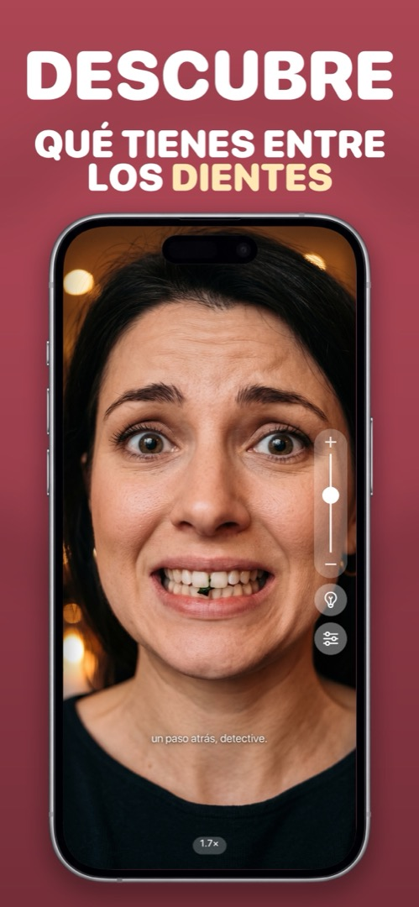

La app de espejo para iPhone que de verdad funciona como un espejo
Un espejo de móvil a pantalla completa con aro de luz, zoom y brillo máximo. Revisa el pelo, el maquillaje y los dientes antes de que lo hagan los demás.
No es duplicar pantalla: es un espejo de verdad con tu cámara frontal.

El espejo de bolsillo que nunca te dejarás en casa
Prueba gratis para iPhone. Se abre directamente como espejo: sin registro, sin menús.
Un espejo con luz, zoom… y opiniones
Todo lo que hace un espejito de bolso, más lo que un espejito no puede hacer.
Revisa antes de que lo hagan los demás
Pantalla completa, siempre en espejo, brillo al máximo. Pelo, cuello, dientes: diez segundos.

Mírate incluso en la oscuridad
Toca la bombilla y los bordes de la pantalla se convierten en un aro de luz. Coche, baño oscuro, hotel a las 6 de la mañana.

Descubre qué tienes entre los dientes
Pellizca o desliza para hacer zoom. Espinaca, semilla de amapola, un pelo rebelde en la ceja: a 2× no se esconde nada.

Deja que tu espejo te juzgue
Lee tu expresión y te contesta. «vale, esa sonrisita de orgullo.» Se apaga cuando quieras paz.
Abrir. Mirar. Cerrar. Esa es toda la app.
Abre Mirrorly
La cámara frontal se enciende al instante, a pantalla completa y reflejada como un espejo. El brillo sube solo al máximo.
Toca la bombilla si está oscuro
El borde de la pantalla se convierte en un aro de luz, cálida o fría, como prefieras. Mirrorly incluso te avisa cuando la luz es mala.
Haz zoom para los detalles
Desliza el control o pellizca para ampliar dientes, cejas y lentillas. Coloca los controles en el lado que prefiera tu pulgar.
Cierra y vete
No se ha fotografiado, grabado ni subido nada. Eso sí, espera un comentario del espejo al salir.
Todo lo que la gente pregunta sobre usar el móvil como espejo
Primero la respuesta sincera; después, cómo hacerlo en Mirrorly.
Cómo usar el iPhone como espejo
Tres métodos, de peor a mejor: la pantalla apagada, la app Cámara y una app de espejo de verdad.
Leer la guía → Pregunta¿El iPhone tiene una app de espejo integrada?
No, y por qué Cámara, FaceTime y Lupa no cuentan de verdad.
Leer la guía → Explicación¿Por qué la cámara frontal de tu iPhone invierte tu cara?
La vista previa está reflejada; el selfie guardado, no. Qué pasa y el ajuste que lo cambia.
Leer la guía → FunciónUna app de espejo con luz: para coches a oscuras, baños mal iluminados y noches largas
Por qué la linterna no sirve con la cámara frontal y cómo la pantalla se convierte en un aro de luz.
Leer la guía → FunciónUna app de espejo con zoom para cejas, dientes, lentillas y pequeños detalles
Cejas, lentillas, dientes: hasta dónde ampliar y cómo mantener la imagen nítida.
Leer la guía → TutorialCómo revisar si tienes comida en los dientes cuando no hay espejo cerca
Pasar la lengua, un buche de agua o el método fiable de diez segundos con el móvil.
Leer la guía → TutorialCómo revisar tu aspecto antes de una reunión (en menos de 10 segundos)
La lista de 10 segundos (pelo, cara, dientes, gafas, cuello, hombros) desde tu mesa o el aparcamiento.
Leer la guía → Para maquillajeLa app de espejo de maquillaje para retocarte en cualquier parte
Luz frontal, color ajustable, aumento, manos libres: lo que necesita un espejo de maquillaje y cómo conseguirlo con el móvil.
Leer la guía → Situación¿Has olvidado el espejo de bolsillo? Usa el que ya llevas en el bolsillo
Espejos improvisados, de desesperado a bueno, y el que ya llevas encima.
Leer la guía → Privacidad¿Es segura una app de espejo? Qué revisar antes de instalarla
Permisos y señales de alarma que revisar en cualquier app de cámara, y qué hace exactamente Mirrorly con la tuya.
Leer la guía → PersonalidadLa app de espejo divertida que te juzga (con cariño)
«tranquilo, inspector.» El espejo con opiniones, y por qué el análisis de la cara se queda en tu móvil.
Leer la guía →Lo que la gente se pregunta antes de instalar una app de espejo
¿Mirrorly es gratis?
Mirrorly se descarga y se prueba gratis: las tres primeras revisiones no cuestan nada. Después, un pago único lo desbloquea para siempre. Sin suscripción y, en cualquier caso, sin anuncios.
Saber más →¿El iPhone tiene una app de espejo integrada?
No. iOS no tiene app de espejo. La mayoría usa la app Cámara, pero está hecha para hacer fotos: el disparador queda bajo el pulgar, el brillo no está al máximo y no hay luz frontal. Mirrorly convierte la cámara frontal en un espejo de verdad.
Saber más →¿Mirrorly guarda o sube mis fotos?
No. Mirrorly no tiene disparador y nunca captura, guarda ni sube fotos, vídeos, fotogramas de la cámara ni datos faciales. La imagen de la cámara y el análisis de expresión se quedan en tu iPhone. Tampoco hay cuenta.
Saber más →¿Mirrorly funciona a oscuras?
Sí. Toca la bombilla y los bordes de la pantalla se convierten en un aro de luz con brillo máximo: útil en el coche de noche, en un baño oscuro o en un hotel. Puedes ajustar la temperatura de la luz, y Mirrorly te la sugiere cuando detecta mala iluminación.
Saber más →¿Puedo hacer zoom para revisar dientes o cejas?
Sí. Desliza el control de zoom o pellizca la pantalla para ampliar. Con unos 2× basta para ver restos de comida entre los dientes, colocar una lentilla o depilar un pelo suelto.
Saber más →¿Es lo mismo que duplicar pantalla?
No. Duplicar pantalla (AirPlay) envía la imagen de tu iPhone a un televisor. Mirrorly es un espejo: muestra tu cara con la cámara frontal, como lo haría un cristal.
Saber más →¿Por qué me veo distinto en Mirrorly que en mis selfies?
Mirrorly siempre te muestra reflejado, como un espejo real: la versión de tu cara a la que estás acostumbrado. Los selfies se guardan sin reflejar, como te ven los demás, y por eso las fotos pueden parecer un poco «raras».
Saber más →¿Por qué el espejo me habla?
Es la personalidad de Mirrorly. Un análisis de expresión en el dispositivo lee tu cara y responde con una frase seca como «bien, pose de diva.» o «aléjate, detective de poros.» Las Reacciones del espejo se apagan en los ajustes. Nada de tu cara sale del móvil.
Saber más →¿Mirrorly está disponible en Android?
No. Mirrorly es una app de iOS para iPhone, disponible en la App Store en español, inglés, alemán, francés, italiano, japonés y chino simplificado.
Saber más →Refleja tu confianza
Una revisión rápida y fácil de tu aspecto en el móvil. Pruébalo gratis en la App Store.
Descargar Mirrorly